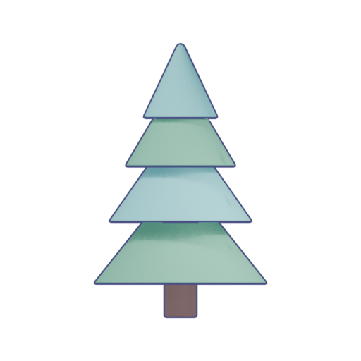
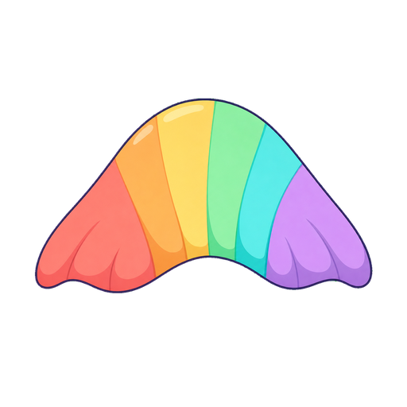
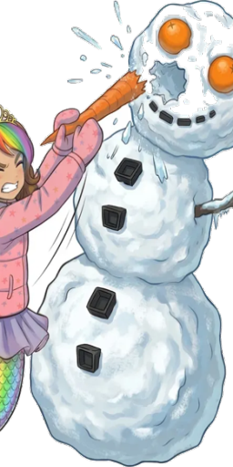
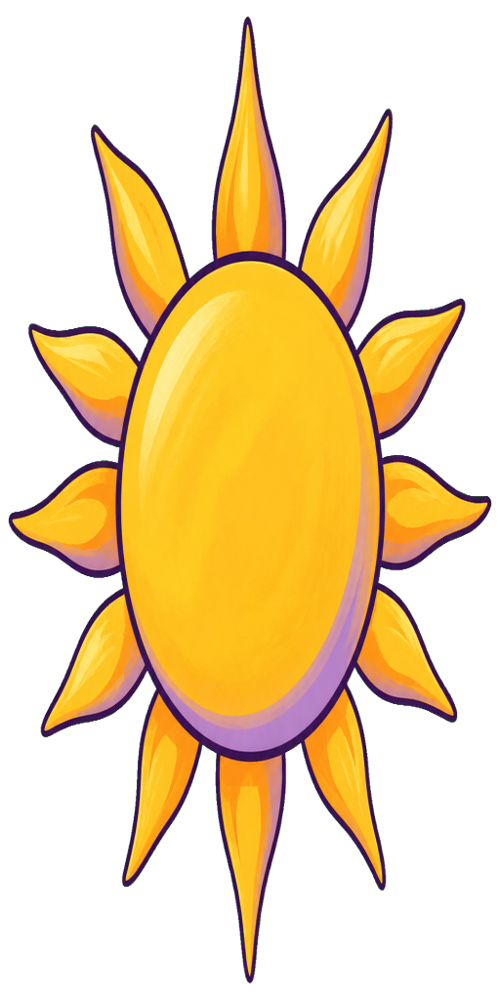
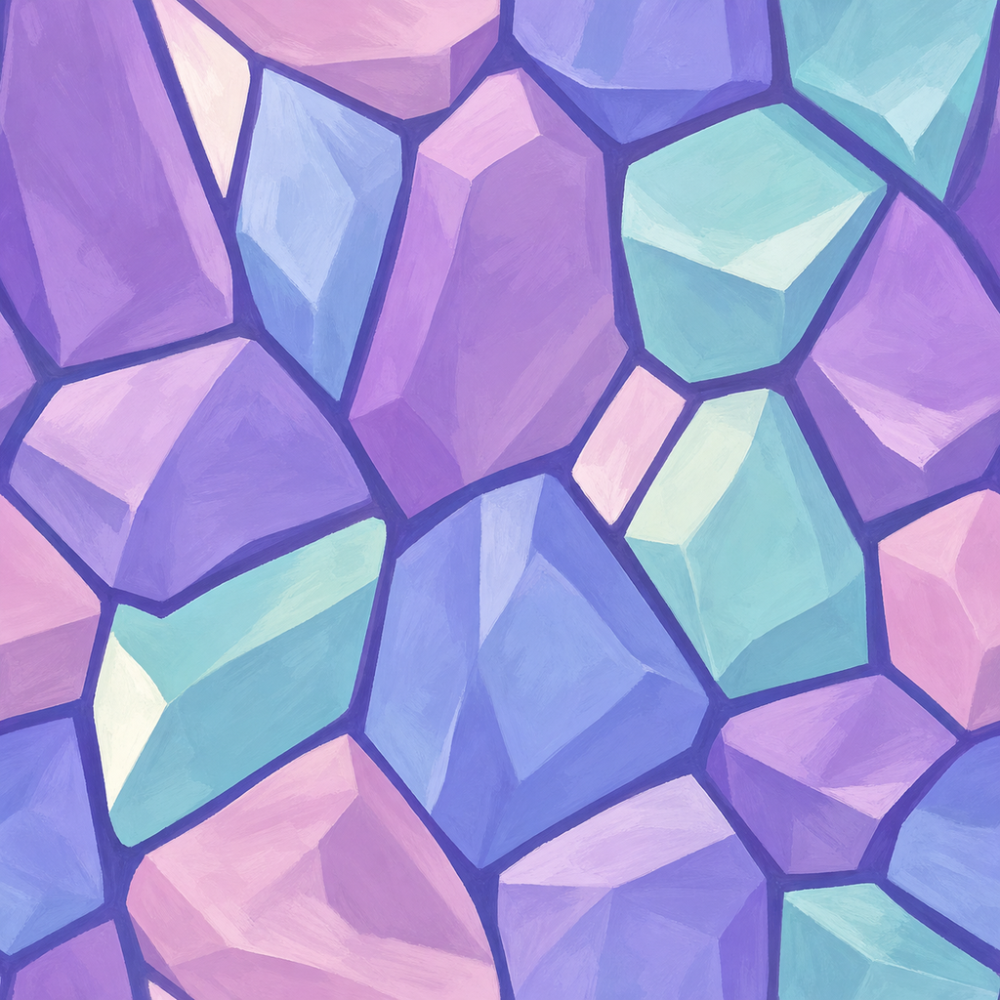

Eight previously unreviewed Day One sourcesEight previously unreviewed Day One candidate sources
All eight complete native originals directly inspected individually. Seven inclusive priorities; six below4.5 and two at or above the source floor. The painted star remains4.5 inclusive-priority; crystal texture4.6 is suitable source reuse. Native styles, crop limits and refinement are written individually below.
These are conservative discovery candidates. Actual job use, mounted screen scale, tool/contact/action sequencing, target-device, child and owner acceptance remain open. No source modified or regenerated in this review. Current783 production source bytes unchanged.
All individual written opinions/hashes · Declared scope/required evidence · Current known artwork library
Exact static consumer-table references: all eight paths occur in dungeon/Ember rendering tables. Actual job use and dynamic/shared use remain unverified; no non-job regeneration is performed.
D1V2-0001 · Carrot · 3.1/5 source
The128px source is a hard orange horizontal wedge with narrow brown transverse marks. Its carrot point reads, but the blocky broad end has no green crown, the contour has small jagged protrusions, and almost flat fill lacks the broad painted form of the newer props. Native detail is already sparse; it cannot support an enlarged high-resolution objective. Actual icon/prop scale and use remain unverified.
Refinement: Inventory existing painted carrot/vegetable sources first. Reuse a complete leafy carrot with clean purple or warm-brown contour and two calm painted value bands; otherwise generate only that named small-prop gap. Do not scale this128px wedge up as a quality repair.
Native [128, 128] · SHA-256 b4c35bee6de1a161f6891396a3b903d22893f772919bbbfe5832e5256e834a8f · original unchanged. Inclusive priority <=4.5. Mounted/action/owner acceptance: unreviewed.
D1V2-0002 · Pine tree · 3.8/5 source

Four exact triangular tiers and a square-ended trunk form a legible conifer silhouette. Aqua/green highlights and deep-indigo outline broadly fit the palette, but hard ruler-like diagonals, identical tier construction and the almost rectangular trunk read as a geometric diagram beside the painted job art. The quiet shadow treatment is preferable to photographic detail.
Refinement: Check existing authored tree cutouts before generation. A reuse candidate needs slightly irregular rounded bough masses, a softer trunk connection and broad painted shading. Keep this diagram when its actual context deliberately requires a simple symbol; no mounted-context approval is inferred.
Native [512, 512] · SHA-256 f8803924685bb10c33a72e2e8c597f5c2a304a564f644777f00cfcf4f1682e1f · original unchanged. Inclusive priority <=4.5. Mounted/action/owner acceptance: unreviewed.
D1V2-0003 · Rainbow swatch · 4.4/5 source

The arched rainbow fin/swatch has rounded scallops, broad warm-to-cool bands and contained cream glints. It reads clearly and is close to the toy-storybook palette. Thin blue/green pixel specks and fringe occur along the upper cutout edge, and the symmetric fan is a decorative motif rather than evidence of an attached mermaid tail.
Refinement: Prefer exact reuse at an appropriate motif scale after checking alpha-edge presentation on the actual pale/cool backgrounds. Preserve this master; any authorized technical cleanup must be a derivative. Do not use this isolated swatch to replace approved Roshan tail anatomy.
Native [512, 512] · SHA-256 72e92630be4a3ccc98ff8ce5fe0954225c1ff50548ae453963b123b998f6422a · original unchanged. Inclusive priority <=4.5. Mounted/action/owner acceptance: unreviewed.
D1V2-0004 · Snowman contact fragment · 3.2/5 source

The painted snow texture, coal shapes, carrot and pink-coated Roshan have lively storybook surface work. As a256x512 complete source, however, Roshan is cut off at the left, the snowman head extends past the top/right and the right body contour meets the canvas edge. Floating snow accents and partial limbs prevent a self-contained objective or contact asset. This may be an intentionally cropped source fragment; actual staging is unknown.
Refinement: Locate the complete same-scene source and current sampling rectangle. Reuse a complete source/crop only if it retains the intended actor/contact and contour; record a missing-source gap rather than replacing canon. This cutout cannot independently prove placing a carrot into a snowman.
Native [256, 512] · SHA-256 38353438e8545c50947cab4b08960c412d49cc4f5b976fd452af72e0db132b31 · original unchanged. Inclusive priority <=4.5. Mounted/action/owner acceptance: unreviewed.
D1V2-0005 · Sprout · 3.8/5 source

Two broad leaves and a mound are easy to recognize against alpha, with aqua/lavender/brown muted shading. The stem is a tall straight rectangle with a square cap, the leaves have conspicuous polygon corners, and the horizontal mound has sharp notches at both ends. The result looks assembled from simple geometric shapes rather than a small painted living plant.
Refinement: Inventory the existing gardener/arborist plant family. Prefer an intact young plant with rounded asymmetric leaves, a gently bending stem and one grounded soil mound; avoid regenerating approved foliage merely for variety. Actual planting and tool-contact sequence remains unreviewed.
Native [512, 512] · SHA-256 d7542d8d812a28ddce435c8acf3a103df85e5af59178ad05c9bdb5fef1ed0926 · original unchanged. Inclusive priority <=4.5. Mounted/action/owner acceptance: unreviewed.
D1V2-0006 · Painted star · 4.5/5 source
The complete1024x512 star has softly rounded points, warm yellow painted bands, pale highlights and a lavender lower edge. Its intentionally wide silhouette is clean and recognizable. A fine blue/green fringe appears at portions of the alpha boundary; the interior brush marks remain grouped rather than noisy. It meets the provisional source floor, with actual screen-size/edge behavior still required.
Refinement: Reuse this exact star if its mounted reward/decoration scale and alpha edge pass. Keep it in the inclusive <=4.5 priority list for final context refinement; its source floor does not pass reward timing or owner acceptance.
Native [1024, 512] · SHA-256 3a8dce7bc1721fd1c6b97b0f8148c1f9a9b176d8a5a28c5855cb3501a74fdcf7 · original unchanged. Inclusive priority <=4.5. Mounted/action/owner acceptance: unreviewed.
D1V2-0007 · Painted sun · 4.3/5 source

Warm yellow/orange broad paint and lavender/plum contours match the palette. The tall oval and needle-like long top/bottom rays make this512x1024 source much narrower and sharper than a friendly rounded sun motif; shorter side rays are softer. It is readable as an emblem, but its exact shape and slender ray tips need actual phone-size review.
Refinement: Inventory existing sun/emblem artwork and verify whether this elongated aspect is intentional in its real slot. Reuse a rounded painted sun where available; otherwise request a small motif-specific shape refinement. Do not stretch the approved source non-uniformly to fake a round sun.
Native [512, 1024] · SHA-256 0c588fccbeff26aeefb3f5cc335cc26089d5a62b4b8d3e47ad9be307edba731b · original unchanged. Inclusive priority <=4.5. Mounted/action/owner acceptance: unreviewed.
D1V2-0008 · Painted crystal-facet texture · 4.6/5 source

The complete1024-square texture has large lavender, aqua, pink and periwinkle facets separated by broad plum bands. Directional brushwork gives each face a painted material, with grouped value changes and no photographic surface noise. It is a coherent decorative material source rather than a freestanding crystal specimen. Repeating seams and room-scale use were not inspected.
Refinement: Retain this exact painted source for a suitable decorative role. Test joins and contrast before any tiled use. Its1K native canvas is not a2048x2048 playable-screen background master and does not repair rooted crystal geometry or the current flat Geologist room by itself.
Native [1024, 1024] · SHA-256 376794caef8458803d3720fcc4707418f695f542bd339cb00e2e8313c9df0100 · original unchanged. Above source floor. Mounted/action/owner acceptance: unreviewed.
Source names and literal consumer roles are separate
These first opinions concern the complete source appearance. The explicit fallback table roles below are not verified played job bindings. A source named carrot is used as a Beak, so replacing that role with a leafy carrot would be wrong. Confirm actual semantics and dynamic/shared use before any regeneration or binding.
| Source ID | Literal table roles |
|---|
| D1V2-0001 | Beak (scripts/dungeon_art.gd:69) |
| D1V2-0002 | Triangle (scripts/dungeon_art.gd:74), tower (scripts/ember_fortress.gd:65) |
| D1V2-0003 | home_ring (scripts/ember_fortress.gd:77) |
| D1V2-0004 | Ice (scripts/dungeon_art.gd:75) |
| D1V2-0005 | Question (scripts/dungeon_art.gd:79) |
| D1V2-0006 | Glow (scripts/dungeon_art.gd:65), Spark (scripts/dungeon_art.gd:70), beacon (scripts/ember_fortress.gd:70) |
| D1V2-0007 | Flame (scripts/dungeon_art.gd:76), gate_veil (scripts/ember_fortress.gd:67) |
| D1V2-0008 | CrystalPedestal (scripts/dungeon_art.gd:63), Diamond (scripts/dungeon_art.gd:72), crystal (scripts/ember_fortress.gd:63) |
Exact role qualification